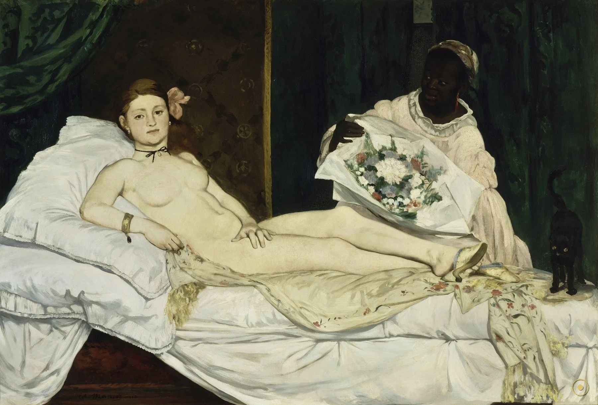
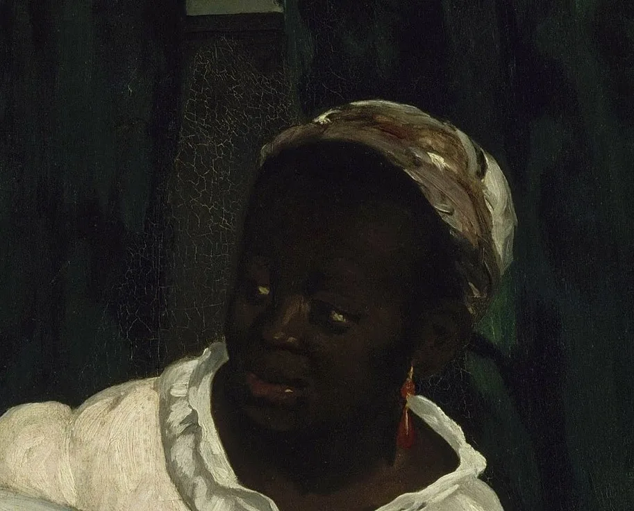
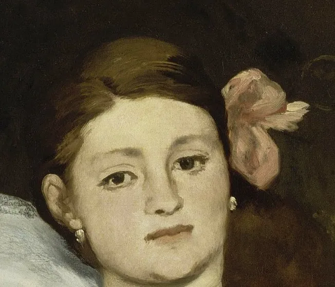
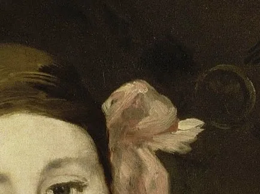
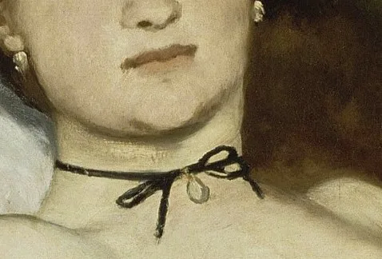
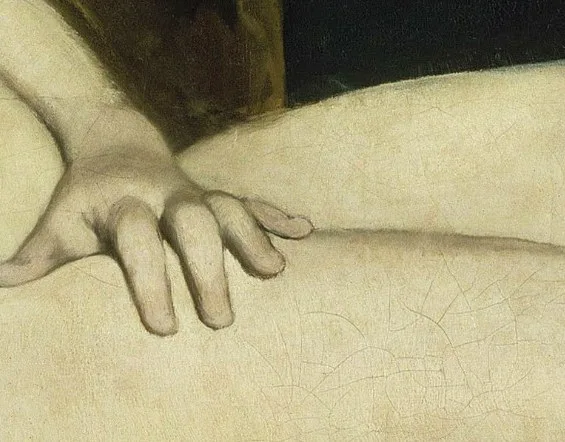
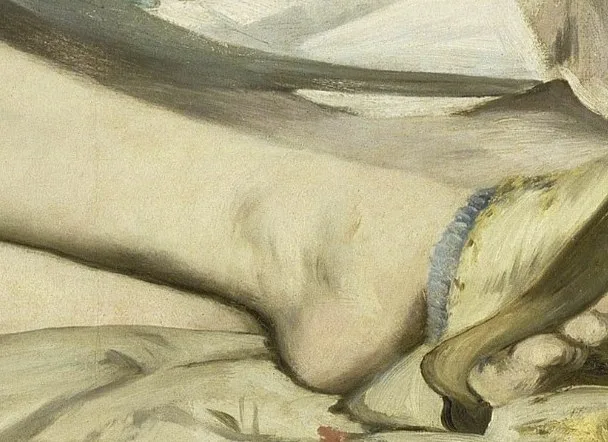
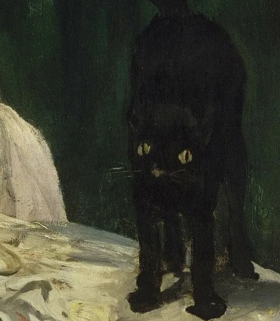
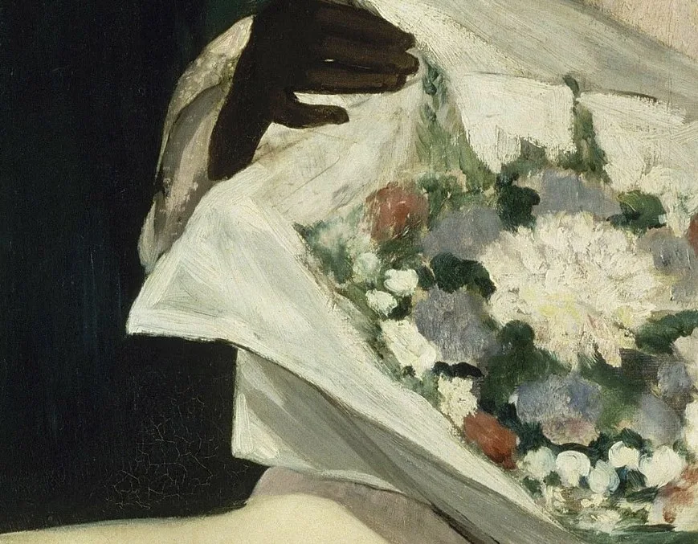

本页面展示的画作包含 艺术人体 / 裸体 内容。所录作品均为美术馆级公有领域馆藏，仅作艺术欣赏与学习之用，不含任何低俗或违规意图。
若您未满 18 周岁，或对此类内容感到不适，请点击「返回画廊」。点击「进入欣赏」即表示您已知悉上述说明，并同意仅作艺术欣赏之用。
「当我们的艺术家画维纳斯时，他们总要修正自然、总要撒谎。马奈问自己：为什么要撒谎？于是他向我们介绍了奥林匹亚——这个属于我们时代的姑娘，你在人行道上就能遇见她。」
1863 年，马奈画下了一个躺在床上的裸女。她没有站在贝壳上，头顶没有光环，身后也没有神话——只有一间昏暗的屋子、一张白床、一位捧着花束的黑人女仆，和一只在床尾竖起尾巴、睁着黄眼睛的黑猫。她赤身，却戴着黑丝绒颈带、珍珠耳环、金手镯，发间别着一朵粉花，脚上挂着一只半脱的拖鞋。她的一只手随意地搭在自己身上，然后，抬起头，直直地看着你。
两年后的 1865 年，巴黎沙龙把它挂上墙，随即炸了锅。惹怒观众的不是裸体本身——沙龙里到处是裸体——而是这具裸体的『身份』与『态度』：那些配饰、那只猫、那束用纸包着的花，都在暗示她是一个可以用钱请到的女人（交际花）；更冒犯的是那道目光——古典的维纳斯总是垂眼或望向别处，安安静静供人观看，而奥林匹亚却回看，坦然、无羞、近乎淡漠，好像被看的人是你。评论家骂她『不道德』『粗俗』，甚至说她肤色发黄、像一具尸体。
这一页不做道德评判，只做一次近距离的凝视。我们顺着马奈的视线走一圈：从她的眼神，到发间的花、颈上的带、腿上的手、脚边的猫。看完你会发现，这幅画最现代的地方，恰恰不是画了什么，而是——谁在看谁。
—— 埃米尔·左拉 1867 年为马奈辩护时所写（据英译转译，措辞因译本而异）
在本页左下角，可以点亮一首与这幅画同代的法国钢琴曲。
马奈几乎没画什么『故事』，却在一个躺着的身体周围，摆满了可解的暗号。

点击画面中的 ✦ 光点 查看画面细节 · 图片来源：Wikimedia Commons（公有领域）
它诞生在 1863 年的巴黎，两年后挂在沙龙的高处，被人嘲笑、也差点被人毁掉；再三十年后，又被一群法国人凑钱买下来献给了国家。
1863 · 巴黎，一间画室
1863 年，三十出头的马奈在画室里完成了这幅后来叫《奥林匹亚》的画。模特是他的老搭档——十九岁的维克托琳·默朗（Victorine Meurent），她同年也出现在《草地上的午餐》里。那一年，《草地上的午餐》被官方沙龙拒绝，只能挤进『落选者沙龙』，惹出轩然大波。马奈没有退缩：他要画的不是神话里的女神，而是一个『当代的』女人——有身份、有价格、有态度。他把古典裸女的整个架子搬来，又一样一样地替换成 1863 年巴黎现实的零件：一条黑丝绒颈带、一朵兰花、一双软底拖鞋、一位黑人女仆、一只黑猫。而诗人波德莱尔，正劝他画『现代生活的英雄』。
➤1865 · 巴黎沙龙
1865 年，沙龙接受了《奥林匹亚》（注意：它是被接受的，不像《草地上的午餐》那样被拒），却把它挂在展厅高处的墙上。观众先是笑，后是骂：保守派斥它『不道德』『粗俗』，有人说画中人像发黄的尸体，有人说那像一只野兽。据马奈的朋友安托南·普鲁斯特后来回忆：『要不是行政当局采取了防范措施，《奥林匹亚》早就被砸烂了』——画前一直有人看管。连一向支持他的左拉，起初也只好绕开题材、只谈画面形式。这场围攻持续了很久，直到 1867 年左拉公开发文为他辩护，才有了第一批真正理解它的人。
➤1890 → 今天 · 从被骂到被封神
马奈 1883 年去世后，《奥林匹亚》一度待价而沽、险些流向国外。1890 年，画家克劳德·莫奈发起了一场『公众认购』，向全法国募集资金，把这幅画买下并献给法国国家——几年后它进入卢浮宫，1986 年随新落成的奥赛博物馆移入，成为镇馆之作之一。故事到这里彻底翻转：当年被骂成『不懂画画』的那幅画，如今被奉为现代绘画的起点。它启发了从塞尚、莫奈到马蒂斯的一整代人；它那道直视观众的目光，被后来的艺术史反复讨论——包括画面里那位曾被历史隐去的黑人女仆，也在近几十年被重新请回了中心。

真事一 · 女仆有名字，她叫洛尔。长久以来，画面右侧那位黑人女仆只被当作『背景』。但马奈的笔记本里留着一行记录：『Laure，非常漂亮的黑人女子』，还附有她的住址；她还出现在他别的作品里。这位模特的真名是洛尔（Laure）。近年艺术史界开始系统地把这位被忽视的女性重新放回讨论中心——2018 至 2019 年，艺术史家丹妮丝·穆雷尔策划展览《致现代的姿势：从马奈与马蒂斯到今天的黑人模特》，正是以她为起点之一，重写了『现代艺术里的黑人形象』这段历史。
真事二 · 它真的一度需要有人看守。据马奈生前好友、后来任美术官员的安托南·普鲁斯特回忆，1865 年沙龙期间，《奥林匹亚》遭到观众的敌意与嘲笑，之所以没有被破坏，『只是因为行政当局采取了防范措施』。也就是说，这幅画第一次公开亮相时，是被当作一件可能引发过激行为的『危险品』对待的——这个细节，比任何评论都更能说明它当年引发的震动有多大。
真事三 · 它是被公众凑钱买下来的。马奈 1883 年去世后，《奥林匹亚》留在其遗孀手中，一度准备出售、甚至险些流散。1890 年，画家克劳德·莫奈发起了一场面向全法国的公众认购，募集资金把这幅画买下，献给法国国家收藏（先入卢森堡美术馆）。这既是一次对马奈的追认，也被当时的人看作一场『把国宝留在法国』的爱国行动。此后它依次进入卢浮宫，并于 1986 年移入新建成的奥赛博物馆。
※ 关于奥林匹亚身份的读解（交际花/妓女）、黑猫与兰花的象征含义，均为学界通行解读，各有支持与质疑；引文据英译转译，措辞因译本而异。
把画面拆开看：她赤裸，身上却挂满『现代的』小东西——每一件都在替她说明身份。

古典裸女垂着眼，她偏偏回看——被看的人，成了看的人。

名贵的兰花是交际花的标志，也是『可被购买』的暗示。

神话里不会有的颈饰，把裸体拉回 1863 年的巴黎。

提香的维纳斯用它护住身体，她把它改成一个随手的动作。

只靠脚尖勾着的软底鞋，暗示卸下防备、属于私密。

提香床尾睡的是一只狗，马奈换成了一只竖尾的黑猫。

还带着包装纸的花，是一个仰慕者刚差人送来的礼物。
她叫洛尔，长期被当作背景，如今被重新请回画面中心。
马奈最激进的地方在画法。古典绘画靠层层晕染的明暗，把人体『揉』进一个立体、可信的空间；马奈却把光几乎平铺上来，取消了柔和的过渡，让肤色、床单、帷幔都变成一块块边界清晰的色区。人物几乎没有体积的『厚度』，背景也几乎没有纵深，像被贴在墙上。当时的评委骂他『不会用明暗』；后来的现代画家却把这种『平』奉为解放——绘画不必再假装自己是一个立体的窗口，它可以坦率地承认：我是一块涂了颜料的平面。
《奥林匹亚》出现时，巴黎正经历奥斯曼男爵的大改造：宽阔的林荫道、百货商店、夜里的煤气灯，一种新的都市生活把人变成了流动的商品。艺术史家 T. J. 克拉克在《现代生活的绘画》里指出，马奈笔下的奥林匹亚，正是这种都市的新主角——一个靠出售自己而生存的女性。她不再是被神话包装的维纳斯，而是街上、门口、人行道上就能遇见的人。选择画她，等于宣布：现代绘画要画的，不再是神，而是这个时代真实的、甚至有点刺眼的人。
1865 年的沙龙几乎是集体声讨：『不道德』『粗俗』『像尸体』。马奈的朋友安托南·普鲁斯特说，画前必须有守卫，否则会被砸。转机来自支持者：诗人波德莱尔把他引向『现代生活』，作家左拉 1867 年撰文为他辩护，说马奈只是不肯撒谎、把『我们这个时代的姑娘』如实介绍给了观众。这场争议本身，成了这幅画历史的一部分——它先是一桩丑闻，然后才被追认成杰作。
进入 20 世纪，《奥林匹亚》被奉为现代艺术的起点之一：它的平涂、它的都市题材、它那道直视观众的目光，都被后来者反复引用。它也持续被重新解读——女性主义艺术史讨论它『谁在看谁』的权力结构；1990 年代，艺术家洛林·奥格雷迪以《奥林匹亚的女仆》为题，追问那位被历史隐去的黑人女性；2018 年的展览又把模特洛尔请回中心。一幅 1863 年的画，至今仍在被追问同一个问题：当一具身体被观看时，究竟是谁在看，谁在被看？
马奈在巴黎画下《奥林匹亚》，模特为十九岁的维克托琳·默朗；同年《草地上的午餐》在落选者沙龙引发争议。
《奥林匹亚》入选巴黎沙龙，挂在展厅高处，招致『不道德』『粗俗』的围攻，画前需人看守。
马奈去世，画作留在其遗孀手中，一度待售，险些流散出法国。
莫奈发起公众认购，全法国集资购下《奥林匹亚》献给国家；此后进入卢浮宫。
移入新建成的巴黎奥赛博物馆，成为镇馆之作；那道目光与那位女仆，仍在被不断重新解读。